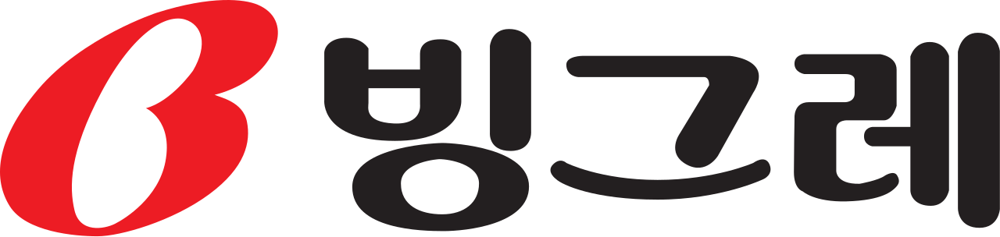

대표 로고대표 브랜드 마크
대표 로고대표 브랜드 마크홈 > 브랜드 매거진 > 농심
농심
농심(Nongshim)은 신라면으로 유명한 한국의 대표 라면·스낵 기업으로, 1965년 설립돼 1978년 농심으로 사명을 바꿨다.
산업 분야 식음료 · 공개 등급 자료 기반 · 브랜드 평가 4.6 ★
한눈에 보는 브랜드
농심(農心, Nongshim)은 한국의 대표 라면·스낵 제조 기업이다. 1965년 롯데공업으로 설립됐고 1978년 '농심'으로 사명을 변경했으며, 2003년 농심홀딩스 지주 체제로 전환했다.
브랜드 관점
농심은 신라면으로 대표되는 한국 최대 라면·스낵 기업이다. 국내 1위 라면 브랜드의 지위를 발판으로 미국 등 해외 생산·판매로 외연을 넓히고 있다.
시작과 성장
1965년 롯데공업으로 설립됐다. 1971년 새우깡, 1978년 농심으로의 사명 변경, 1986년 신라면 출시를 거치며 라면·스낵 시장의 선두로 올라섰다.
브랜드 아이덴티티
1986년 출시한 신라면(Shin Ramyun)은 한국을 대표하는 라면으로 세계 100여 개국에 수출되며 K-푸드의 상징이 됐고, 새우깡 등 스낵으로도 친숙한 국민 식품 브랜드다.
제품과 서비스
신라면·짜파게티·새우깡 등 라면과 스낵을 주력으로 한다. 미국 캘리포니아에 2개 공장을 운영하며 현지 생산을 확대하고 있다.
사람들
현재 상태
라면과 스낵을 합쳐 연 매출 3조 원대 규모로 성장했으며, 북미를 중심으로 한 글로벌 확장을 추진하고 있다.
타임라인
정리된 연도형 이벤트가 없습니다.
BI/CI 변천사
대표 로고대표 브랜드 마크함께 읽을 브랜드
 식음료 · 자료 기반동원
식음료 · 자료 기반동원동원(Dongwon)은 동원참치로 유명한 한국의 수산·종합식품 기업으로, 동원그룹 모태는 1969년 창업했다.
BI
비비고
식음료 · 자료 기반비비고비비고(bibigo)는 CJ제일제당이 2010년 출시한 글로벌 한식 브랜드로, 만두·김치·즉석밥·한식 소스 등 100여 종의 한국 식품을 약 70개국에서 판매한다.
식음료 · 자료 기반오리온오리온(Orion)은 초코파이로 유명한 한국의 대표 제과 기업으로, 1956년 동양제과로 설립됐다.

식음료 · 자료 기반빙그레빙그레(Binggrae)는 바나나맛우유로 유명한 한국의 유제품·빙과 기업으로, 1967년 설립됐다.
DA
대상
식음료 · 자료 기반대상대상(Daesang)은 미원과 청정원으로 유명한 한국의 종합 식품·조미료 기업으로, 1956년 창업했다.
 식음료 · 자료 기반롯데웰푸드
식음료 · 자료 기반롯데웰푸드롯데웰푸드(Lotte Wellfood)는 빼빼로·가나 초콜릿으로 유명한 롯데그룹 계열 제과 기업으로, 1967년 롯데제과로 설립돼 2023년 현 사명이 됐다.
네슬레(Nestlé)는 스위스 브베에 본사를 둔 세계 최대 규모의 식음료 다국적 기업이다.
 식음료 · 자료 기반오뚜기
식음료 · 자료 기반오뚜기오뚜기(Ottogi)는 1969년 설립된 한국의 종합 식품 기업으로, 국산 카레와 다양한 가공식품으로 알려져 있다.